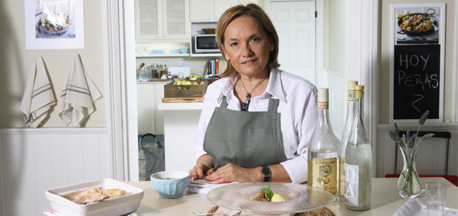

Las mejores recetas las encontras acá!
Algunos de nuestros chefs
Diego Gera
El chef Diego Gera tiene una extensa carrera y su reputación de excelencia lo precede. Formado con los mejores maestros, se capacitó en el país y en Europa. Actualmente está a cargo de la cocina del prestigioso Yacht Club Puerto Madero y del Mercado de Carruajes pero ha sido también chef de reconocidos restaurantes a lo largo de los años. Además, es profesor en la Asociación de Hoteles y Restaurantes, Confiterías y Cafés de Buenos Aires. En su tiempo libre le gusta tocar la trompeta y gusta tanto de los autos de colección que hasta tiene uno.

Dolli Irigoyen
Nacida en General Las Heras, Argentina, su contacto con la cocina comenzó muy tempranamente en la cocina familiar, alentada por los aromas de las recetas de su abuela. Apasionada por su profesión, desde muy joven comenzó a forjar su extensa carrera en la que se destacaría no sólo como cocinera, maestra de cocina y comunicadora mediática sino también como propietaria de restaurantes y asesora en el desarrollo de importantes emprendimientos gastronómicos. Desde sus inicios, la docencia -en talleres y escuelas de cocina- ocupa un lugar central en sus actividades, además de la participación permanente en certámenes del rubro en América y Europa. La década del 90 marcó el inicio de su carrera como comunicadora, a partir de diversos programas y participaciones en los que supo ganarse un espacio privilegiado entre los principales referentes gastronómicos de su Argentina natal y del continente. Actualmente es miembro permanente de la Academia Culinaria de Francia y propietaria de “Espacio Dolli”, un ámbito creativo en el que trabaja junto a su equipo de jóvenes cocineros en el desarrollo de nuevas propuestas. Dolli es una parte esencial de elgourmet.com; partícipe central de la señal desde sus inicios, se ha establecido como una de las autoridades en el continente en materia culinaria, llevando por el mundo la originalidad y elegancia de sus presentaciones, siempre con su toque personal.
Gonzalo D Ambrosio
Gonzalo se inició en la cocina al calor del hogar. Desde niño pasaba las horas mirando como su abuela y su padre cocinaban. Esa experiencia lo fue nutriendo de la cocina italiana y fue el inicio de su gusto por la gastronomía. Estudió en el Instituto Argentino de Gastronomía y llegó a ser de chef de cocina a los 20 años. Tres años después ya era Chef Ejecutivo de más de once restaurantes en Buenos Aires. Cuando su carrera iba sobre rieles en Argentina, Gonzalo decidió partir de ese país buscando nuevas experiencias e instalarse en Madrid donde actualmente trabaja. Hoy tiene su programa de TV en nuestra señal donde, a través de sus platos, intenta demostrar que se puede cocinar fácil y rico para todas las ocasiones.